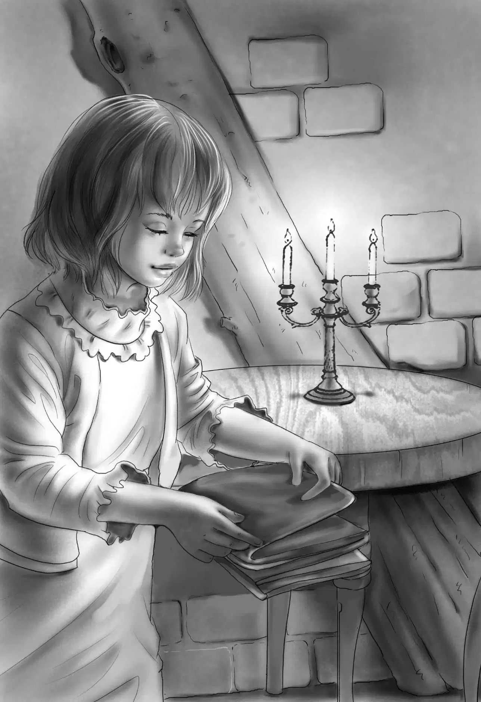

The next day Maggie saw an old man in overalls coming to the back door. He had a basket of eggs.
"Are you selling eggs?" Maggie asked.
"Yep," said the old man.
"Where did you come from?" she asked again.
"Beans'," said the man.
Benny heard him from the next room. He laughed.He said to Violet,"He doesn't talk much,does he?"
"I wonder who he is?" said Violet.
"I know who he is," said Benny."He is the Beans' hired man. I saw him working there when I went over."
Maggie told the man,"We will have plenty of eggs later. Sam is going to raise chickens."
"Yep," said the man.
"We do want two dozen eggs now," Maggie went on."Put them in this pan."
Benny and Violet listened.
"Have you lost any more eggs?" asked Maggie.
"Yep," said the man.
"Can't you say anything but 'yep'?" Maggie laughed.
"No," said the man. He did not laugh.
"Well,come every week,"said Maggie."What's your name?"
"Willie," said the man.
"My,my! A grown man called Willie!You ought to be William."
The man did not answer. Then he left.
Benny went into the kitchen at once."What's the matter with him?"he asked."Can't he talk?"
"Well," said Maggie,"he doesn't act very smart to me. Maybe he doesn't know very much. Not very bright. He can't help that. Maybe he's a good worker. He sells very nice eggs."
"Hi! Come on!" called Henry from outside."I've got a bigger flashlight this time. It will last longer."
Very soon Henry,Benny,and the two girls were on their way to the woodshed. Sam had to stop his work and go with them.
"I'll never get anything done," said Sam. But he smiled.
"I don't think it will be much longer now," said Henry mysteriously."Do any of you know why all those things were taken out of the woodshed?"
"I think I do," said Violet."Somebody found my flowers on the table."
"Right!"said Henry. "And then why were the things put back?"
"I bet someone saw us," said Benny,"and said,'Oh,it's only children!'"
"Good,Benny. That's what I think too," replied Henry."We'll be careful this time to leave everything just as it is now."
"Do you want me to stay outside and watch?" asked Sam.
"Yes,I think that would be best,wouldn't it?" said Jessie."We'll take Watch down in the hole with us. If you see anyone,just call."
Soon the four children and the dog were down in the hole. The flashlight was very bright.
"Almost as bright as day," said Benny,looking around.Watch was already in the tunnel,smelling around,wagging his tail. Henry followed him. He had to bend over.
Soon Henry called back,"This isn't a tunnel! It's just a big room. I can almost stand up."
Jessie followed him. She said,"This was certainly a storehouse. All kinds of things are on the floor. Don't fall over them."
Benny came in. He said,"Let's put the light in the middle,Henry. Then we can look at every single thing. What are the little red balls all over the floor?"
"I think they are bullets," said Henry."They are all rusty. That makes them look red. Pick them all up."
"Oh,Violet,I wish we had a bag!" cried Jessie.
"We have," said Violet. She held up what looked like a small,folded piece of cloth. But when she shook it out,it was a large bag folded up many times. When it was open,it was enormous.
"How do you think of everything,Violet?" said Jessie."That will hold all we find."
"All but this," shouted Benny. He dug out a flintlock. It was almost buried in the dirt.
"Just exactly like the other!" cried Violet.
"That settles it,"said Henry."This was a hiding place for ammunition."
Jessie added,"Only somebody has been here lately. It must be the one who lives in this woodshed."
"I just wonder who it could be!" said Violet."Who would want to hide here these days?"
"Look here!" cried Jessie."I almost fell over this!" She held up an old milking stool with three legs.
Henry looked at it."I can just see one of those soldiers sitting on that stool with a candle!"
"What do you see him doing,Henry?" asked Benny.
"Well,packing bullets and cartridges and gunpowder in candle boxes."
At last they could not find anything more. They went up the steps and put the cover over the hole. Then they went home with their treasures. Sam had not seen anyone.

When Aunt Jane had seen everything,she looked at the four children. She said,"I think we are soon going to find a very exciting story. Mr. Cole has come to spend the summer with his brother,and he wants to see you right away!"